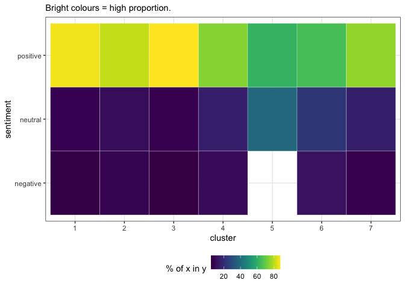

LandscapeR is our R Package for transforming unstructured raw text into a navigable landscape. The package makes use of cutting-edge language models and their dense word embeddings, dimensionality reduction techniques, clustering and/or topic modelling as well as Shiny for an interactive data-exploration & cleaning UI.
Installation
You can install the development version of LandscapeR using the install_github function from the devtools package:
devtools::install_github(repo = "jpcompartir/LandscapeR")Example Use Case
We can take this table of text:
library(LandscapeR)
library(tidyverse)
#> ── Attaching packages ─────────────────────────────────────── tidyverse 1.3.2 ──
#> ✔ ggplot2 3.4.0 ✔ purrr 1.0.0
#> ✔ tibble 3.1.8 ✔ dplyr 1.0.10
#> ✔ tidyr 1.2.1 ✔ stringr 1.5.0
#> ✔ readr 2.1.3 ✔ forcats 0.5.2
#> ── Conflicts ────────────────────────────────────────── tidyverse_conflicts() ──
#> ✖ dplyr::filter() masks stats::filter()
#> ✖ dplyr::lag() masks stats::lag()
ls_example
#> # A tibble: 11,226 × 9
#> document text cluster clean…¹ date senti…² perma…³ V1
#> <dbl> <chr> <dbl> <chr> <dttm> <chr> <chr> <dbl>
#> 1 1 @Shruthi_… 4 shruth… 2022-10-26 12:17:22 positi… <a hre… 3.95
#> 2 2 anyone us… 2 anyone… 2022-10-26 11:44:36 positi… <a hre… 4.59
#> 3 3 Non tech … 7 non te… 2022-10-26 10:20:16 neutral <a hre… 4.01
#> 4 4 I really … 3 i real… 2022-10-26 06:25:23 positi… <a hre… 3.16
#> 5 5 Chrome us… 2 chrome… 2022-10-26 05:02:06 neutral <a hre… 6.98
#> 6 6 I still c… 3 i stil… 2022-10-26 03:16:42 positi… <a hre… 0.601
#> 7 7 Try edge … 2 try ed… 2022-10-26 02:38:57 positi… <a hre… 1.93
#> 8 8 telling t… 2 tellin… 2022-10-26 01:49:56 positi… <a hre… 4.21
#> 9 9 When I mo… 7 when i… 2022-10-26 01:02:29 negati… <a hre… 0.487
#> 10 10 I repent.… 4 i repe… 2022-10-25 23:26:41 positi… <a hre… 5.77
#> # … with 11,216 more rows, 1 more variable: V2 <dbl>, and abbreviated variable
#> # names ¹clean_text, ²sentiment, ³permalinkAnd transform it into a navigable landscape:
ls_example %>% ls_plot_static()
We can add colour to a grouping variable to see where our groups sit and how they relate:
ls_example %>%
mutate(cluster = factor(cluster)) %>%
ls_plot_group_static(group_var = cluster)
We can home in on each group:
ls_example %>%
mutate(cluster = factor(cluster)) %>%
ls_plot_group_facet(group_var = cluster)
An interesting use case which can be used to inform the LandscapeR investigative process when comparing two grouping variables, such as cluster and sentiment, or product and topic etc. is the ls_plot_variation_matrix() function:
ls_example %>%
ls_plot_variation_matrix(cluster, sentiment)
#> Loading required namespace: viridis